| HOME | BIODATA | EXPERIENCE | EDUCATION | FAMILY | GALLERY | FRIENDS | CONTACT |
Alhamdulillah, I'm so grateful for having such good friends, as I know, they were always there when I needed someone to talk and they always suppport me behind my back. Hopefully, we'll meet each other in Jannah one day, aamiin. They're not just besties but also a family to me. Never have the awkward feeling among us as we have the same brain and react things the same HAHAAHAHA. Miss them so much! Wish to meet them right now ❤
2014
2015
2018
2019
2020
2020 (LATEST)
| Pictures | Name | Age | Place of study | Course of study |
| 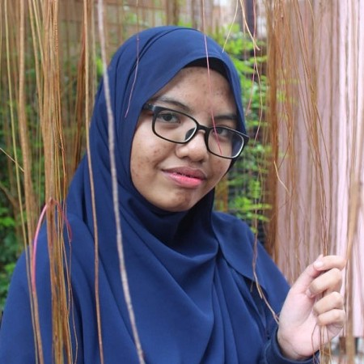 | Ain Amirah binti Mohamad Nazri | 20 | UiTM Puncak Alam | Graphic Design |
| 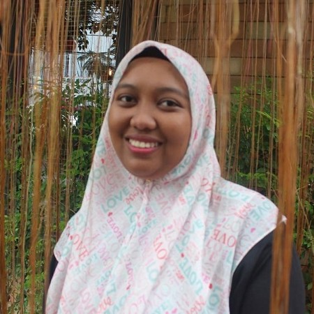" | Nurul Syafiqah binti Hawari | 20 | SMK ST Anthony, Teluk Intan | STPM |
| 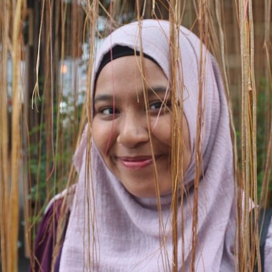 | Noor Aieman Fatihah binti Kamaruddin | 20 | UIAM, Gombak | English |
| 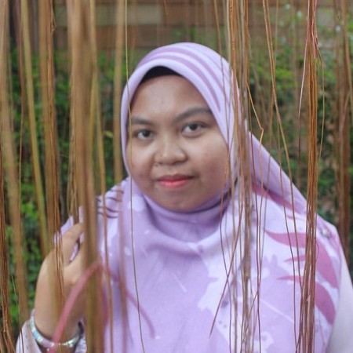 | Nurin Nabilah binti Azhari | 20 | UUM, Kedah | Multimedia |
| 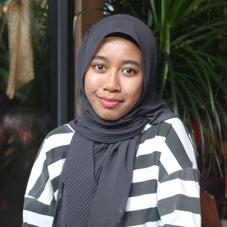 | Nur Farah Wahida binti Arshad | 20 | UIAM, Gombak | English |
| 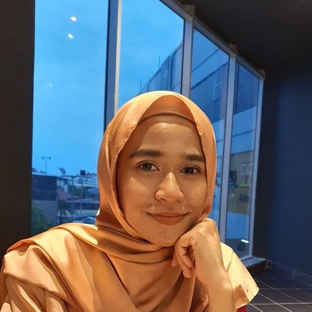 | Nabilah binti Md Yusof | 20 | UPM, Serdang | Process and Food Engineering |
| 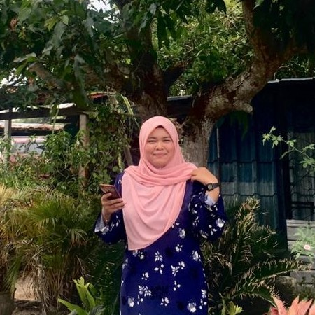 | Nur Azian binti Zubairy | 20 | Kolej Vokasional | Electrical & Electronics Engineering |
Alhamdulillah, Allah met me with such good friends in UiTM, the place I studied for my diploma
JIRAN BILIK
Have you ever wondered how we met and how we get super closed to each other? It starts with this (look below ☟)
ROOMMATE
Aisyah, Zahra, Farhah, Aqilah
JIRAN BILIK
Syazwani, Dini, Fazlin
The name we got for jiran bilik is because their room is just next to our front room infront of
ours. This would be hard to explain but they're my Jiran Bilik. Alhamdulillah for having them in my
diploma life as I go almost everywhere with them. For this two years and a half of friendship, there
were few places that we had been together because we used to plan trips and went there together.
I miss all those moments and wish we had the time together to travel again. Hopefully one day huhu ❤
| Pictures | Name | Age | Course | Hometown |
| 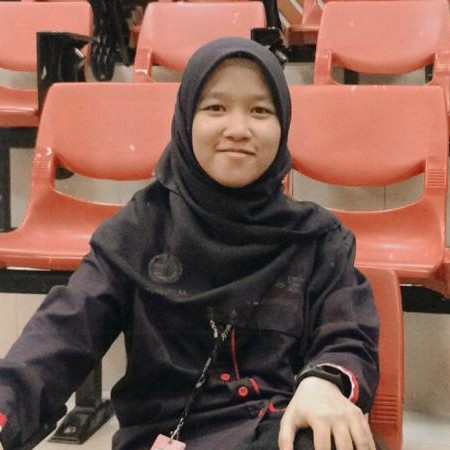 | Nurul Aisyah binti Ahmad Zulfa | 20 | IM110: Information Management | Teluk Intan, Perak |
| 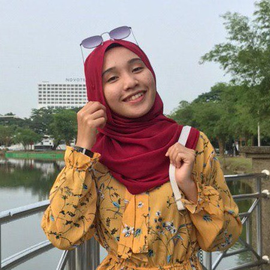" | Nur Dini Dhiyana binti Farizan | 20 | IM110: Information Management | Seri Manjung, Perak |
| 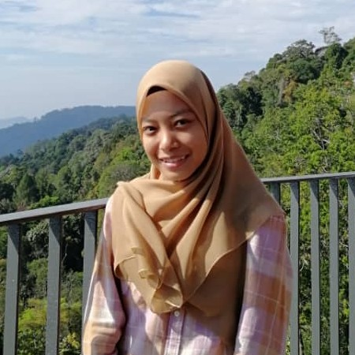 | Nurul Fazlin binti Abd Ghani | 20 | IM120: Library Management | Maran, Pahang |
| 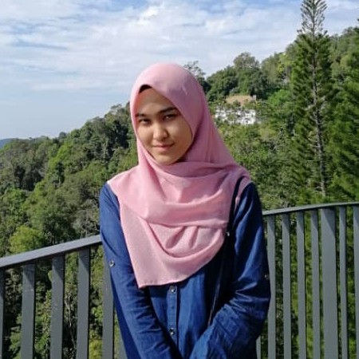 | Aqilah binti Shaibun | 20 | BA119: Banking | Kepala Batas, Penang |
| 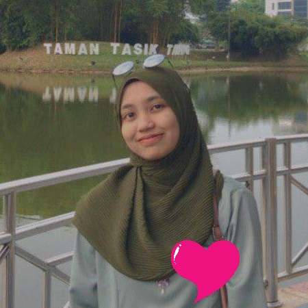 | Nur Farhah binti Rizal | 21 | AM110: Public Admin | Sg. Petani, Kedah |
| 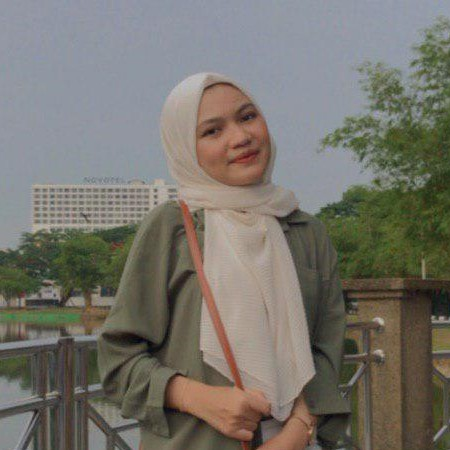 | Nur Syazwani binti Sazali | 20 | BA111: Business Management | Padang Serai, Kedah |